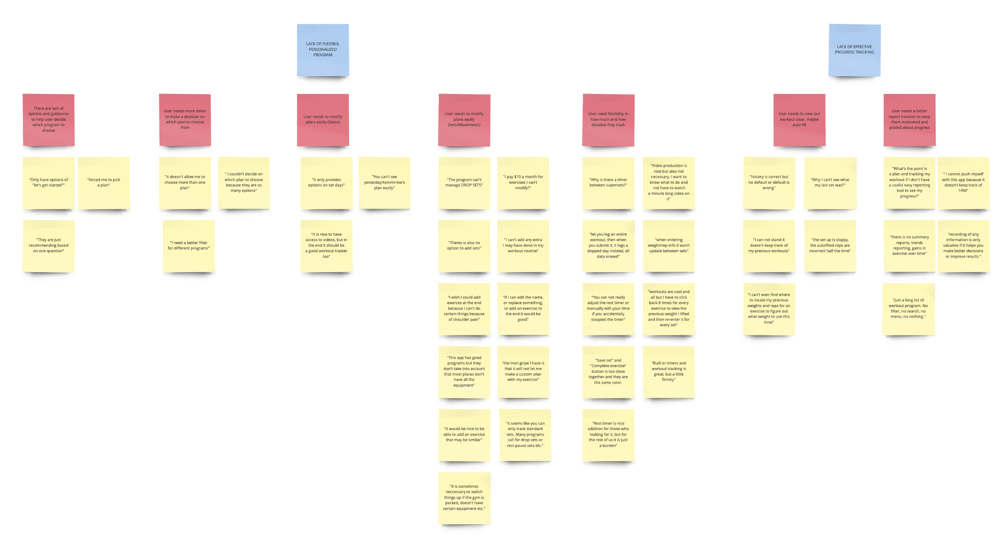
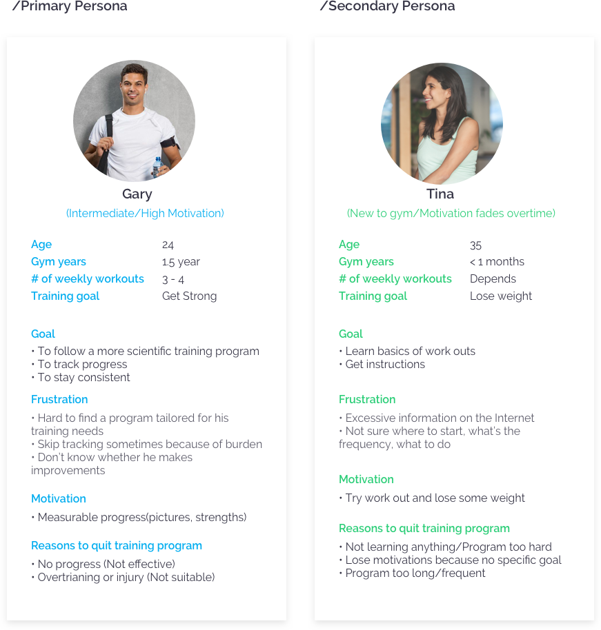
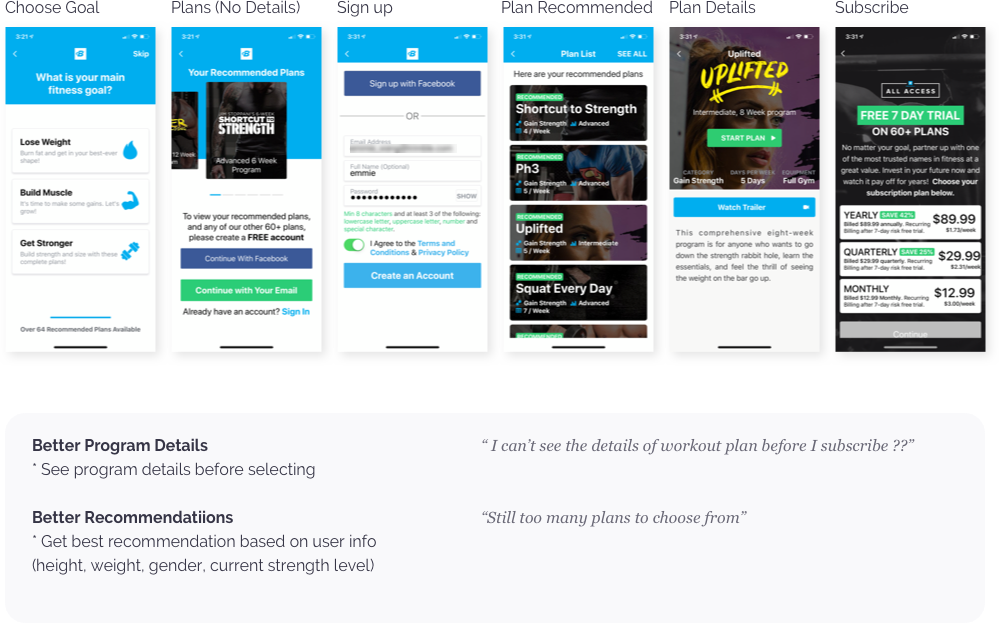
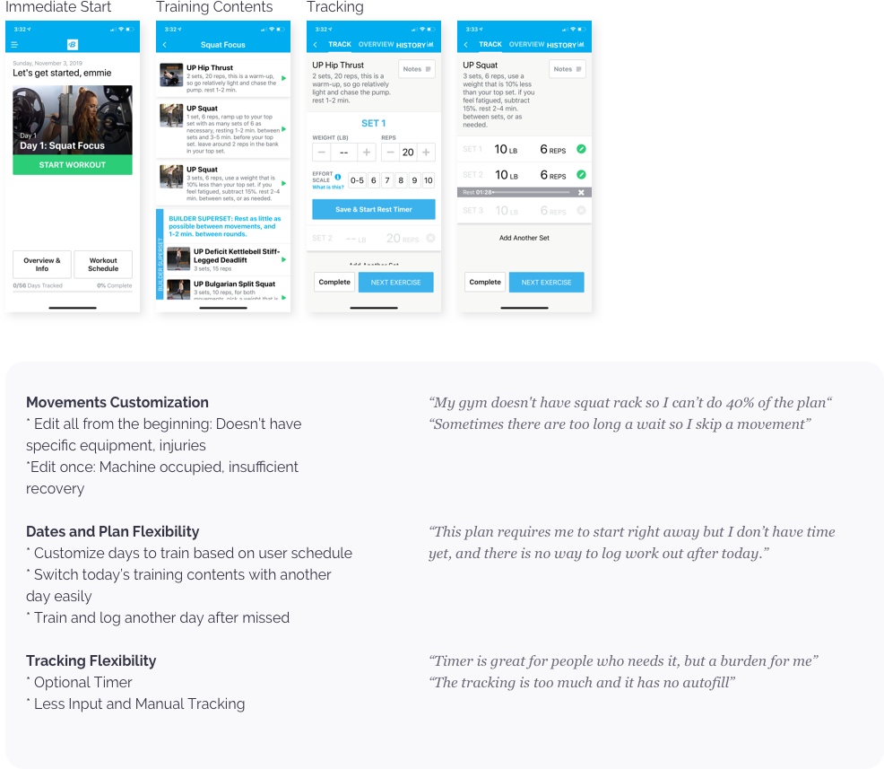

Bodybuilding.com Redesign
UI/UX
Individual Work
Timeline
October,2019 - November,2019
(SI684 Consumer Health Design Final Project)
Tools
Interview, Affinity Map, Persona, Journey Map, Ideation, User Flow Design, Wireframes, Visual Design
CONTEXT AND CHALLENGE
Bodybuilding.com All Acess Plan (BAAP) Subscription
Bodybuilding.com’s BAAP is a subscription service that consist of unlimited access to 60+ workout plans and exclusive store discounts and services.
The website is seeking for solutions to grow its revenue in subscriptions. One major solution is to build more customer royalty (that causes long-term subscriptions) by encouraging users to build a habit of following structured workout plans.
"Why purchase a subscription when I can find all the information online somewhere?"
- AppStore reviews: I read through 300+ comments on the AppStore, and collected then into 73 affinity notes. This helps me identify user needs.
- Usability testing: I ran 2 sessions of in-person in-gym usability testing sessions including: goal setting, workout tracking and progress reviewing. This helps me identify usability problems of the live app.
- Try it myself: I tried following a plan for a week (4 training days). This helps me gain empathy for users.
“Why continue to subscribe when every week has similar content?”
- Survey: I sent out surveys about why people stick to/or couldn't stick to their training plan, and got 31 responses. This helps me validate user needs and identify insights for designing behavior change.
PROBLEMS
How do I learn about the problems?
/Qualitatively
- AppStore reviews: I read through 300+ comments on the AppStore, and collected then into 73 affinity notes. This helps me identify user needs.
- Usability testing: I ran 2 sessions of in-person in-gym usability testing sessions including: goal setting, workout tracking and progress reviewing. This helps me identify usability problems of the live app.
- Try it myself: I tried following a plan for a week (4 training days). This helps me gain empathy for users.
/Quantitatively
- Survey: I sent out surveys about why people stick to/or couldn't stick to their training plan, and got 31 responses. This helps me validate user needs and identify insights for designing behavior change.

Affinity Diagram of all the comments from app store reviews
What are the problems?
According to survey, two types of people presses strong interest in trying out online training programs for the long term. The primary persona is intermediate users who already build a habit of working out consistently, however not following any structured plans.

/Problem 1: Lack of flexibile, personalized program
Users are not getting the program according to their situations. Either too hard, too easy, too long, too frequent or they can not customize anything about it based on themselves.
Users also think the tracking function is not flexible and requires too much efforts.
/Problem 2: Lack of effective progress reporting
After user spend a lot of efforts tracking, they don’t get effective ways to view these progress.
This causes demotivation and impairs long-term goal setting.
1. LACK OF FLEXIBLE, PERSONALIZED PROGRAM
User Question 1: Which program should I choose based on me?

User Question 2: How can I make it more suitable for my situation?

2. LACK OF EFFECTIVE PROGRESS REPORTING
DELIVERABLES